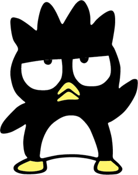
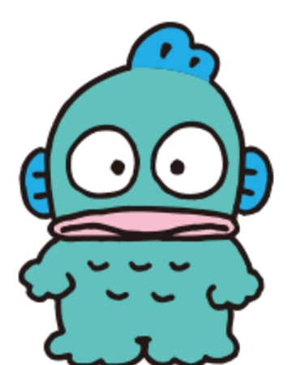
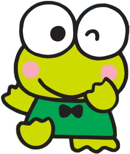
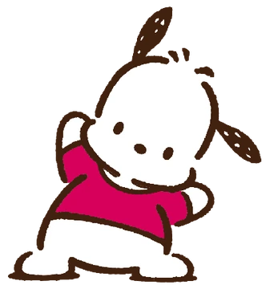
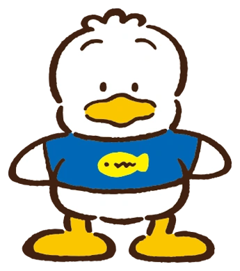
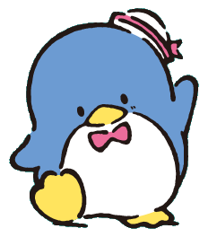

Un pingüino negro con una personalidad rebelde y traviesa. Es conocido por su expresión malhumorada y su actitud de "chico malo", pero en el fondo, es un buen amigo con un gran corazón.
Sería genial verlo tocando la guitarra eléctrica o la batería, instrumentos que reflejan su actitud rebelde y enérgica.
Es un pez mitad hombre que vive en el mar. Es un poco tímido y torpe, pero tiene un buen sentido del humor y siempre trata de hacer reír a sus amigos. Sueña con ser un héroe, aunque a menudo sus intentos fallan de maneras cómicas.
Podría estar asociado con tocar un saxofón o un trombón, algo un poco excéntrico y divertido que encaje con su carácter único.
Es una rana verde que vive en Donut Pond con su familia y amigos. Es aventurero, curioso, y siempre dispuesto a ayudar a los demás. Es un líder natural y le encanta pasar tiempo con sus amigos.
Podría tocar la flauta o el ukelele, instrumentos que se adaptan a su naturaleza alegre y aventurera.
Es un cachorro blanco con orejas negras que adora los deportes, especialmente el fútbol. Es un personaje simpático, siempre lleno de energía, y es conocido por su actitud optimista y su amor por la diversión.
Podría tocar la guitarra acústica o la armónica, algo ligero y divertido que encaje con su personalidad alegre y deportista.
Es un pato que siempre se ve con una gorra de béisbol. Es un personaje optimista, amistoso y lleno de energía. Le encanta nadar y es conocido por su carácter relajado y amable.
Podría tocar el bajo o la batería, instrumentos que le permiten destacar sin robar demasiado protagonismo, acorde con su carácter relajado.
Es un pingüino azul con un sombrero de marinero que adora vestirse con estilo. Tiene una gran colección de sombreros y es conocido por su buen corazón y su actitud amistosa, aunque puede ser un poco torpe a veces.
Podría ser visto tocando el piano o un contrabajo, algo que refleje su estilo elegante y sofisticado.
